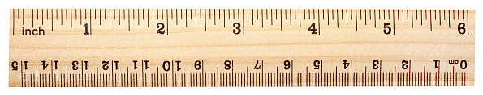

¡Arrancando con Resistencia de Materiales! ⚙️
Bienvenida
La Resistencia de Materiales es la materia que nos deja chusmear qué pasa adentro de los objetos cuando les aplicamos fuerzas.
Piénsalo así: es el siguiente nivel después de lo que ya vieron en Estática y Dinámica.
- Con Estática, si algo no se mueve, calculamos las fuerzas para que se quede quieto.
- Con Dinámica, si se mueve, calculamos cómo lo hace.
Pero nos falta responder preguntas clave… ¿El material se la banca? ¿Se deforma? ¿Se rompe?
¿Para qué nos sirve todo esto?
Saber solo las fuerzas de afuera no alcanza. Para que quede más claro, miremos esta estructura súper simple:
Con Estática, podemos calcular las reacciones en los soportes y listo. Pero en la vida real, un ingeniero se hace otras preguntas…
Las preguntas del millón 🤔
Pensemos en cada parte de la estructura:
1. Sobre la viga BC:
- Si la viga ya existe, ¿aguanta las cargas o se rompe?
- ¿Se va a doblar o deformar mucho? ¿Cuánto exactamente?
- Si la tengo que diseñar yo, ¿qué forma y tamaño me conviene para que sea barata pero segura?
2. Sobre la barra que la sostiene (AB):
- Si ya está puesta, ¿se banca la fuerza que le llega desde la viga?
- ¿Cuál es la fuerza máxima que soporta y cuánto se va a estirar?
- Si la diseño de cero, ¿qué forma le doy para que no falle ni se estire de más?
3. Sobre los demás componentes…
También nos preguntamos sobre el poste de apoyo (CD) y los tornillos o pasadores (en A o B): ¿son lo suficientemente robustos?, ¿cuál es la carga máxima que aguantan?, ¿qué tamaño deben tener?
La respuesta: Mecánica de Materiales
Bueno, todas estas preguntas son el corazón de la Mecánica de Materiales.
Esta materia nos da las herramientas para pasar de “las fuerzas que actúan sobre un objeto” a entender “lo que le pasa al material del objeto por dentro”.
¿Qué son las “Estructuras”? 🏗️🚗✈️
En ingeniería, casi todo lo que construimos es una “estructura”. No pienses solo en cosas gigantes como puentes o edificios. Una estructura puede ser también el chasis de un auto, el ala de un avión o el brazo de un robot.
Básicamente, es cualquier cosa hecha de varias partes (“miembros”) ensambladas para aguantar cargas sin romperse ni deformarse demasiado.
No vamos a diseñar un auto, pero…
Ojo, este curso no es “Diseño de Máquinas” ni “Diseño Estructural”. La Mecánica de Materiales te da la teoría y las herramientas fundamentales para que después, en esos otros cursos, puedas diseñar cosas específicas.
Diseñar algo real implica pensar en muchas otras cosas:
- Costo: ¿Podemos fabricarlo sin fundirnos? 💰
- Durabilidad: ¿Cuánto tiempo va a durar funcionando bien?
- Mantenimiento: ¿Es fácil de reparar o lubricar?
La misma idea, diferentes aplicaciones
Lo genial de la Mecánica de Materiales es que sus principios son universales y se aplican a todas las ramas de la ingeniería.
El principio para diseñar la viga de un puente es el mismo que para diseñar el eje de una máquina.
¿Qué es lo que cambia entonces?
- El tipo y la cantidad de carga.
- Los materiales y las formas de las piezas.
- Las normas de seguridad de cada industria.
El Corazón del Asunto: Análisis y Diseño
El objetivo final es entender la relación entre estas tres cosas:
Fuerza de Afuera ➡️ Esfuerzo (Fuerza Interna) ➡️ Deformación
El truco para dominar la materia es ¡HACER MUCHOS EJERCICIOS! La práctica es fundamental.
Análisis vs. Diseño
En la práctica, te vas a encontrar con dos tipos de problemas:
1. Análisis (Modo Detective 🕵️) Te dan la pieza y tienes que investigar: ¿cuánto esfuerzo sufre? o ¿cuál es la carga máxima que aguanta?
2. Diseño (Modo Arquitecto/Ingeniero 👷) Te dan las cargas y los límites, y tu misión es definir: ¿de qué tamaño y forma tiene que ser la pieza para que sea segura?
Consejos Clave para Resolver Problemas
1. ¡Dibuja, dibuja y dibuja! ✍️
- Te ayuda a entender el problema mucho más rápido.
- Te permite visualizar lo que está pasando.
2. Sé Prolijo y Ordenado 🧘
- Un trabajo descuidado no sirve para repasar después.
- La prolijidad te obliga a pensar de forma estructurada.
La Batalla de los Sistemas: Métrico vs. Imperial 🌍 vs. 🇺🇸
Aunque el mundo de la ingeniería usa el Sistema Métrico (SI), en la práctica industrial (sobre todo en EE.UU.) el Sistema Imperial (pulgadas, libras) sigue muy presente.
Para esta materia, no nos queda otra que aprender a trabajar cómodamente con los dos sistemas.

¿Por qué no debería asustarte?
Aquí viene la buena noticia: a los materiales no les importa en qué los midas.
Los principios de la Mecánica de Materiales son universales. La física de fondo no cambia.
Pasar de un sistema a otro es más fácil de lo que parece. Es solo un cambio en los números, no en las ideas fundamentales.